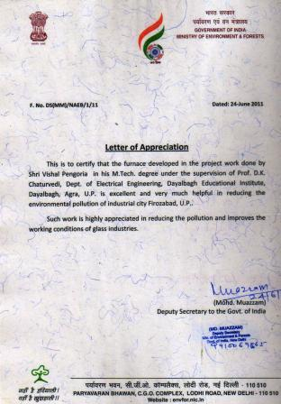

|  |
- The Ministry of Environment and Forrest, Government of Indi, New Delhi has given a letter of appreciation to Prof. D.K. Chaturvedi for guiding the project work of Mr. Vishal Pengoria on the development of a new Gas Fired Furnace for small scale industries of Firozabad.U.P. Such work is highly appreciated in reducing the pollution and improves the working conditions of glass industry.
- IEE U.K. gave free full membership for the review work done for the The IEE Proceedings and Electronic Letter. They also offered free access to IEE library and e-services.
|